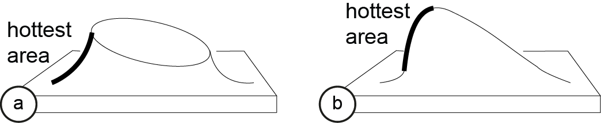
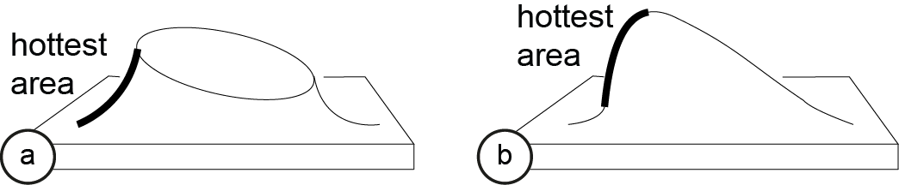

Publication
Stefanie Mueller, Anna Seufert, Huaishu Peng, Robert Kovacs, Kevin Reuss,
Francois Guimbretiere, Patrick Baudisch FormFab: Towards Shape Exploration in Interactive Fabrication. In Proceedings of TEI ’19 (to appear).
Francois Guimbretiere, Patrick Baudisch FormFab: Towards Shape Exploration in Interactive Fabrication. In Proceedings of TEI ’19 (to appear).
FormFab:
Towards Shape Exploration in Interactive Fabrication.
Figure 1. (a) FormFab changes the workpiece while the user is interacting with it. First, a heat-gun warms up the workpiece. Once the material has become compliant, (b) the user’s hand gesture interactively controls a pneumatic system that applies pressure or vacuum, pushing the material outwards or pulling it inwards.
Several systems have illustrated the concept of interactive fabrication, i.e. rather than working through a digital editor, users make edits directly on the physical workpiece. However, so far the interaction has been limited to turn-taking, i.e., users first perform a command and then the system responds with physical feedback. In this paper, we present a first step towards interactive fabrication that changes the workpiece while the user is manipulating it.
To achieve this, our system FormFab does not add or subtract material but instead reshapes it (formative fabrication). A heat gun attached to a robotic arm warms up a thermoplastic sheet until it becomes compliant; users then control a pneumatic system that applies either pressure or vacuum thereby pushing the material outwards or pulling it inwards.
Since FormFab reshapes the workpiece while users are moving their hands, users can interactively explore different sizes of a shape with a single interaction.
Introduction
Recently, Willis et al. [28] proposed the concept of Interactive Fabrication. The key idea is to bring the principles of direct manipulation [20] to the editing of physical objects: Instead of working on a digital 3D model and producing the physical version only at the end, users make edits directly on the physical workpiece and see it change immediately.
Early interactive fabrication systems, such as Shaper [28], CopyCAD [5], and constructable [14], allow for hands-on editing on the physical workpiece. However, their interaction is best described as turn-taking: users first provide input to the system and then the system responds with physical feedback. Since there are two discrete steps, users can only explore one option per turn [2].
In this paper, we propose an interactive fabrication system that can change a workpiece’s shape while the user is interacting. This enables users to explore different sizes of a shape with a single interaction rather than in multiple turns. We accomplish this using a process called formative fabrication, which rather than adding or subtracting, reshapes the existing material. In our system, users interactively control a pneumatic air pump that applies either pressure or vacuum to a compliant thermoplastic sheet, thereby pushing the material outwards or pulling it inwards (Figure 1b).
 Figure 2: (a,b) Drawing outline and heating. (c,d) One interaction, i.e., the same part is first pulled out and then pushed in.
Figure 3: Making the teddy bear head: (a,b) drawing and extruding the left ear, (c) extruding an eye.
Figure 4: The sculpture of a teddy bear’s head.
Figure 2: (a,b) Drawing outline and heating. (c,d) One interaction, i.e., the same part is first pulled out and then pushed in.
Figure 3: Making the teddy bear head: (a,b) drawing and extruding the left ear, (c) extruding an eye.
Figure 4: The sculpture of a teddy bear’s head.
 Figure 6: Heat guns and temperature sensor.
Figure 7: Pneumatic system: an Arduino controls how much pressure is applied and also switches the valves.
Figure 8: (a) overheating, (b) even heat distribution.
Figure 9: Calculating path for even heat distribution.
Figure 10: Our system computes a physical simulation on a digital counterpart of the physical workpiece.
Figure 11: (a) Zero level. (b) Increase pressure. (c) Decrease pressure, then switch to vacuum.
Figure 6: Heat guns and temperature sensor.
Figure 7: Pneumatic system: an Arduino controls how much pressure is applied and also switches the valves.
Figure 8: (a) overheating, (b) even heat distribution.
Figure 9: Calculating path for even heat distribution.
Figure 10: Our system computes a physical simulation on a digital counterpart of the physical workpiece.
Figure 11: (a) Zero level. (b) Increase pressure. (c) Decrease pressure, then switch to vacuum.
 Figure 12: Factors influencing the heat distribution.
Figure 12: Factors influencing the heat distribution.
 Figure 13: (a) This 2 mm sheet is stretched too far. (b) The thicker 4 mm sheet can accomplish this shape.
Figure 13: (a) This 2 mm sheet is stretched too far. (b) The thicker 4 mm sheet can accomplish this shape.
 Figure 14: Since the heat comes from the top, it requires less time to sink through (a) a thin workpiece than (b) a thicker workpiece.
Figure 14: Since the heat comes from the top, it requires less time to sink through (a) a thin workpiece than (b) a thicker workpiece.
 Figure 15: (a) Applying the same amount of pressure to a small area (no resulting extrusion) and (b) a big area.
Figure 16: Results from our material stretch test.
Figure 17: Different tools: (a) simultaneous extrusion of both ears, (b) copy pasting the left ear to the right side.
Figure 18: (a) Snapping the shape to fixed increments to provide guidance. (b) Aligning the right ear height to the left ear height.
Figure 19: Heating: (a) outline only, (b) entire area.
Figure 15: (a) Applying the same amount of pressure to a small area (no resulting extrusion) and (b) a big area.
Figure 16: Results from our material stretch test.
Figure 17: Different tools: (a) simultaneous extrusion of both ears, (b) copy pasting the left ear to the right side.
Figure 18: (a) Snapping the shape to fixed increments to provide guidance. (b) Aligning the right ear height to the left ear height.
Figure 19: Heating: (a) outline only, (b) entire area.
 Figure 20: First steps of making a head sculpture with neck. (a) outline shape for neck, (b,c) adding the head.

Figure 21: Heterogeneous heating: (a) a tilted plateau shape from an outline, (b) a tilted area shape.
Figure 20: First steps of making a head sculpture with neck. (a) outline shape for neck, (b,c) adding the head.

Figure 21: Heterogeneous heating: (a) a tilted plateau shape from an outline, (b) a tilted area shape.